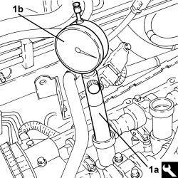
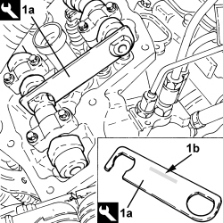
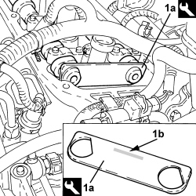

0510A24 CHAIN-DRIVEN TIMING SYSTEM - CHECK WITH TIMING COVER(S) REMOVED - OPERATION TO BE CARRIED OUT WITH TAPPET COVER(S) REMOVED AND TAPPETS ADJUSTED
- Path
- Procedures > 05 DIAGNOSTICS > 0510 VARIOUS CHECKS > 0510A CHECKS ON ENGINE > 0510A24 CHAIN-DRIVEN TIMING SYSTEM - CHECK WITH TIMING COVER(S) REMOVED - OPERATION TO BE CARRIED OUT WITH TAPPET COVER(S) REMOVED AND TAPPETS ADJUSTED
- Kind
- repair procedure (removal / refitting; the operation number is the code)
- Applies to
- engines: 3.2 JTS; all production periods
- Interactive page
- https://sloeber94.github.io/elrnDB-aBrrSpdr/en/#/946003987
Applies to: engines: 3.2 JTS; all production periods
- Remove the spark plugs referring to
1. Fit tool (1a) complete with dial gauge (1b) in the seat for the spark plug for cylinder no. 1.
Tool | Description | Function | Validity |
|---|---|---|---|
1860895000 | Extension | T.D.C. check | 3.2 JTS |

Applies to: engines: 3.2 JTS; all production periods
- Adjust the service pulley nut to turn the crankshaft clockwise, timing side, until the piston for cylinder no.1 is at T.D.C. in the combustion stroke.
Applies to: engines: 3.2 JTS; all production periods
1. Position template (1a) on the left cylinder head camshaft making sure that the wording "ALTO - UP" (1b) is uppermost.
Tool | Description | Function | Validity |
|---|---|---|---|
2000007400 | Templates | Timing check | 3.2 JTS |

Applies to: engines: 3.2 JTS; all production periods
1. Position template (1a) on the right cylinder head camshaft making sure that the wording "ALTO - UP" (1b) is uppermost.
Tool | Description | Function | Validity |
|---|---|---|---|
2000007400 | Templates | Timing check | 3.2 JTS |
